Individual Diameter Shift Correction
Source:R/IndividualDiameterShiftCorrection.R
IndividualDiameterShiftCorrection.RdCorrect for 'shift' diameter errors, based on the individual's non-abnormal growths. Greater weight is given to growths recorded at a diameter close to the one to correct. The weighted mean of the non-abnormal growths is computed and applied to correct the abnormal diameter.
Usage
IndividualDiameterShiftCorrection(
DataTree = NULL,
DBHCor,
Time,
cresc,
cresc_abs,
cresc_abn,
coef = 0.9
)Arguments
- DataTree
A dataset corresponding to a single tree/stem's (1 IdTree/IdStem) measurements (data.frame or data.table) To be filled in if you want the column "DiameterCorrectionMeth" (correction method) to be filled in the corresponding row. Otherwise leave DataTree = NULL
- DBHCor
Diameter vector (numeric)
- Time
Time vector (numeric)
- cresc
Annual diameter increment with NA instead of abnormal values (numeric)
- cresc_abs
Absolute diameter increment (not divided by time between 2 values) with NA instead of abnormal values (numeric)
- cresc_abn
Abnormal diameter increment positions (numeric)
- coef
description... (numeric)
Value
List of 2 objects:
DBHCor (numeric vector): corrected by the method
DataTree (data.table): with the DiameterCorrectionMeth column filled with correction method ("weighted mean", "shift realignment")
Details
Method:
Correct the 1st value of the shift ("weighted mean"):
Compute the absolute difference between the DBH to correct and the others
Give respective weights to the growth (cresc) values according to the distance to the DBH to correct
Compute the weighted mean of the growths (cresc)
Apply the weighted mean to correct the abnormal DBH
Correct the following values of the shift ("shift realignment"): Each value = the previous value + initial growth
Examples
DBHCor = c(13:16, 16-4, (16-4)+2, (16-4)+3, 15-4, (15-4)+2)
Time = c(seq(2000,2008, by = 2), 2012, 2014,2016, 2020)
plot(Time, DBHCor)
cresc <- ComputeIncrementation(Var = DBHCor, Type = "annual", Time = Time)
cresc_abs <- ComputeIncrementation(Var = DBHCor, Type = "absolute", Time = Time)
cresc_abn <- which(cresc >= 5 | cresc_abs < -2) # abnormal values indices
cresc[cresc_abn] <- NA
cresc_abs[cresc_abn] <- NA
Rslt <- IndividualDiameterShiftCorrection(DBHCor = DBHCor, Time = Time,
cresc = cresc, cresc_abs = cresc_abs,
cresc_abn = cresc_abn)
library(ggplot2)
ggplot() +
aes(x = Time) +
geom_point(aes(y = Rslt$DBHCor),
col = "forestgreen") +
geom_line(aes(y = Rslt$DBHCor),
col = "forestgreen") +
geom_point(aes(y = DBHCor),
col = "red") +
geom_line(aes(y = DBHCor),
col = "red") +
theme_minimal() +
labs(x = "Year", y = "Diameter (cm)")
